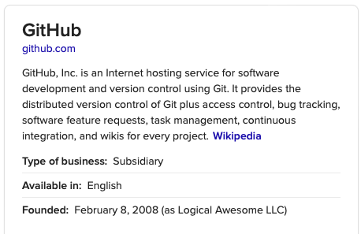

Quarto Crash Course
For School of Psychology, Speech and Hearing
University of Canterbury
2023-04-12
Karakia Whakatūwhera
Whakataka te hau ki te uru/ Whakataka te hau ki te tonga/ Kia mākinakina ki uta/ Kia mātaratara ki tai/ E hī ake ana te atakura/ He tio, he huka, he hau hū/ Tīhei mauri ora!
Cease the winds from the west/ Cease the winds from the south/ Let the breeze blow over the land/ Let the breeze blow over the ocean/ Let the red-tipped dawn come with a sharpened air./ A touch of frost, a promise of a glorious day.
Kauhau
- What is
Quarto? - Documentation
- Version control, Remote repositories, and Blogging
- Templates
- Presentation
- Final thoughts
Problem 1
Problem(s) 2
- Time constraints and having to be efficient.
- Having to redo a whole document only to change formatting for various purposes.
- MS Word is not necessarily the best application for writing up.
- The need to remember data analysis/stats decisions made along the way.
What about the audience?
Any other similar problems?
My favourite(?!) problem

And then…

Introduction
Quarto
Featured in Nature
Cut the tyranny of copy-and-paste with these coding tools (Perkel 2022)
- App-switching, updating your numbers, fix an error
- Use
executable manuscripts - “Reduces the number of manual things you have to do” (Sarah Pederzani)
- Transparency
- Version control
- Collaboration
- Steep curve :)
Documentation
Basics
- Use the latest version of
RStudio, at leastVersion: 2022.12.0+353or later on your computer. - Within
RStudio, click onnew filedrop down menu and open a newQuarto Document, and name it.

Basics cont…
- Let’s have a sneak peak at different parts of a quarto document here.
- Once the
.qmddocument is opened, use either thesourcetab orvisualtab to start documenting or writing code. Then hitRender. You will see output in theViewermenu. See next slide.
Basics cont…

Basics cont…
- For a brief start-up, copy this code and paste it in the current open
.qmdand hit render. - Alternatively, you can copy a similar
.qmddocument to the current project, open it, then edit and render it. - Demo
- A comprehensive step-by-step tutorial is available on Quarto website.
- Or, you could watch this YouTube video in your own time. It is a bit outdated, but a great start.
Add citations and reference list
Best done using the visual editor.
E.g., Quarto can be used to create executable manuscripts in RStudio, Python, or VS Code .
Saving as pdf
Add the following code to yaml.
format:
pdf:
toc: true
number-sections: true
colorlinks: trueVisit quarto website for further details.
Version control, Remote repositories, and Blogging
Git
To know more: See official website, or just this quick start-up guide
GitHub
Blogging
Now that we know basics of documentation, version control and remote repos (I know, we are yet to demonstrate this), blogging is extremely easy with Quarto. There are two ways:
- We can add a
_quarto.ymlfile in to our local repo, render it, and it would starting shaping like a blog. This is the more complicated way. - We can use an available blog template, create a new local repo and take it from there.
Here is a quick guide.
Blogging contd…
Blogging with Quarto can be done with the use of Git and GitHub Pages, or we can also use PositCloud instead of GitHub Pages.
As we can see here, a must do step during blogging with GitHub Pages is rendering output directory to docs in _quarto.yml.
project:
type: website
output-dir: docsDemo
Important steps for using remote repo are:
- Installing Git
- Creating a GitHub account
- Connecting the local system with remote repo
- Creating a repository on GitHub
- Connecting the remote repo with the local one
These steps are important whether or not we are blogging. For blogging, then of course we need a publisher domain - which could be GitHub Pages or PositCloud.
Quarto Templates
An example
- Taylor and Francis:
https://github.com/mikemahoney218/quarto-tandf.
Follow on-screen instruction.
- For further info, see Article Templates
Advantages of documentation with Quarto
- Keep your data files and write up files integrated.
- Create re-usable workflow – becomes much easier once we are familiar.
- Use version control to see the previous versions.
- Hide/show
Rcode when appropriate. - Move ready-made
.qmdfiles to a journal template rather than re-formatting the whole manuscript. - The pdf version is generally appropriate for
PsyArXiv.
Presentation
Basic slides
- We used the good ol’
.qmd. - Add
revealjsin the format. Or, to make it more elaborate:
format:
revealjs:
theme: simple
highlight-style: github
slide-number: c/tFurther info: https://quarto.org/docs/presentations/
Demo: let’s use the current slides as an example :)
Sharing slides
- Save as pdf: This option only works with
Google Chromeas explained here. Or, see below.
Sharing slides
- Provide the url from the blog/site.
What are the advantages?
Final thoughts
How I use Quarto: See my repositories
Getting Help: Awesome Quarto, Quarto website, YouTube, social media.
Anonymous feedback: please use this link
Karakia Whakatūwhera
Unuhia, unuhia/ Te pou, te pou/ Kia wātea, kia wātea/ Āe, kua wātea
Remove, uplift/ The posts/ In order to be free/ Yes, it has been cleared/